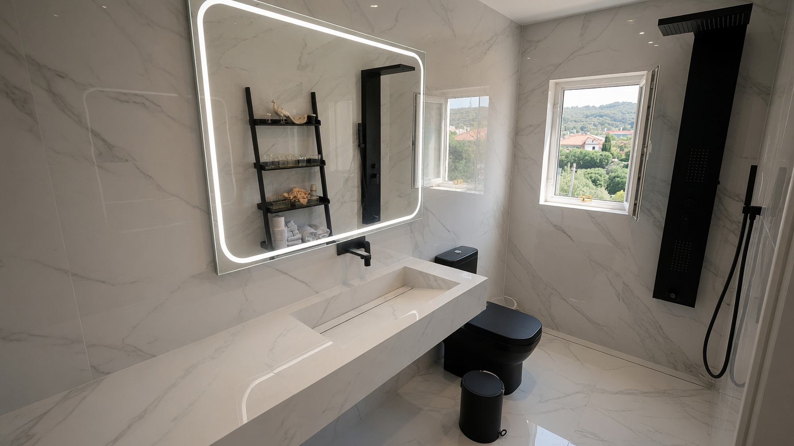
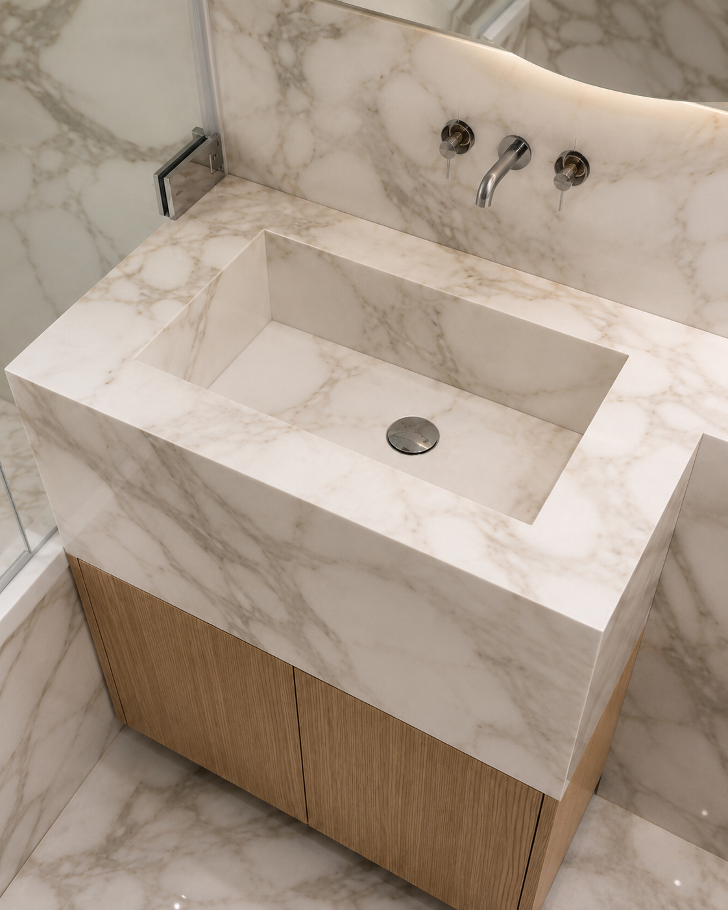
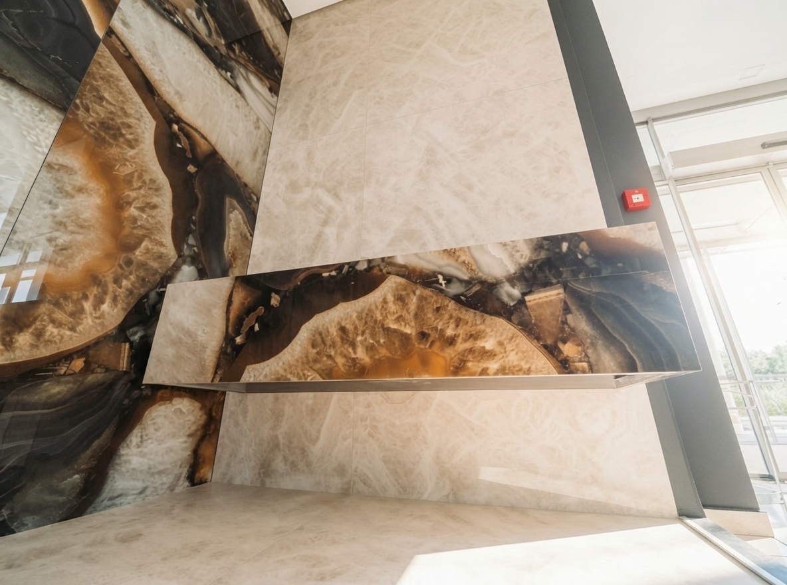
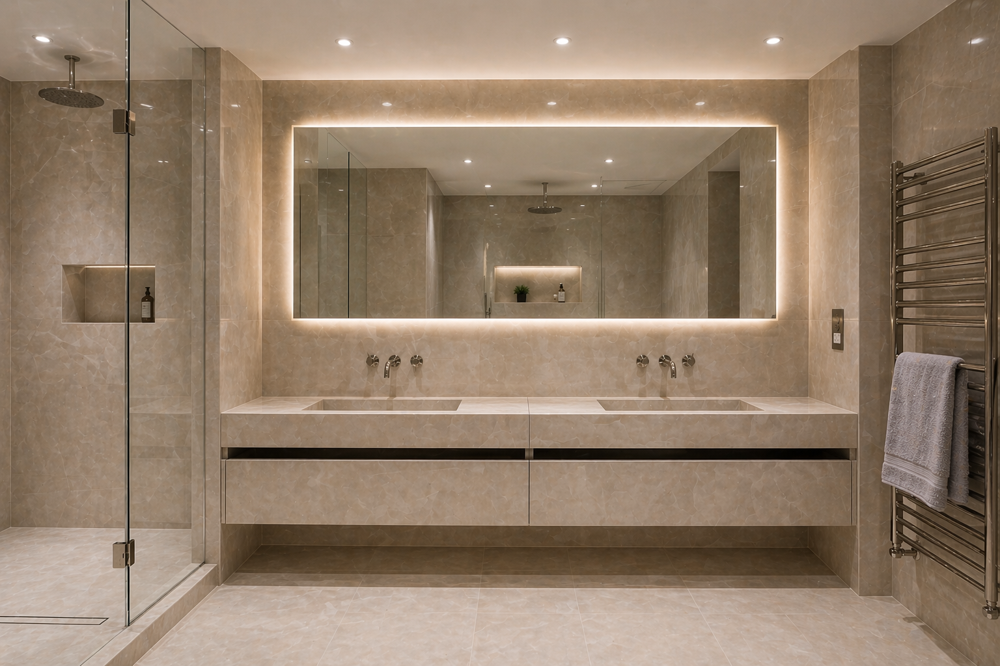
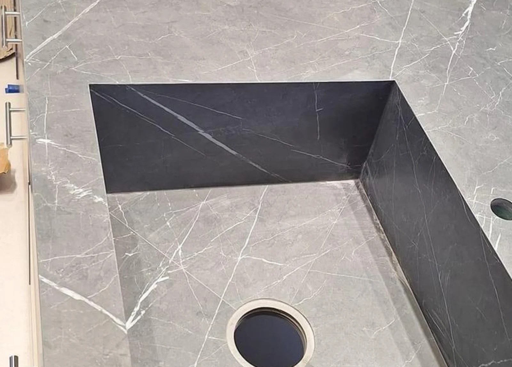
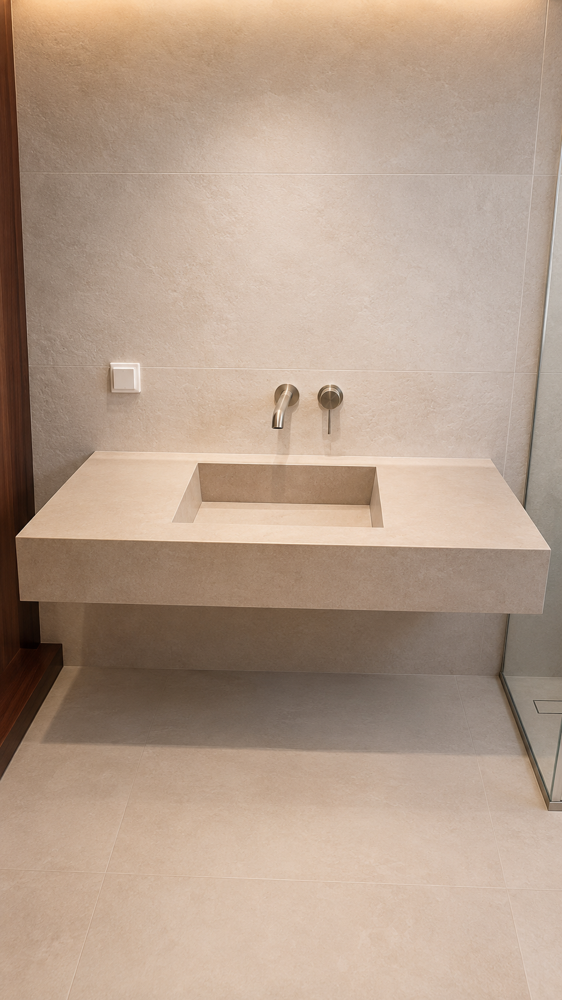
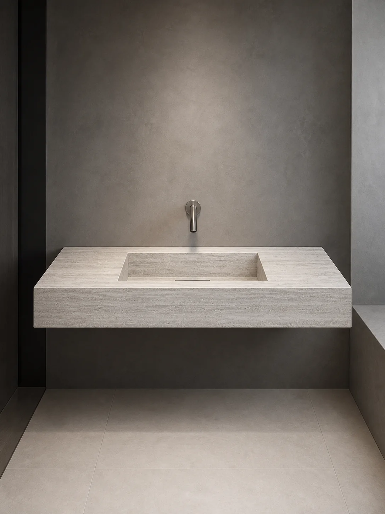
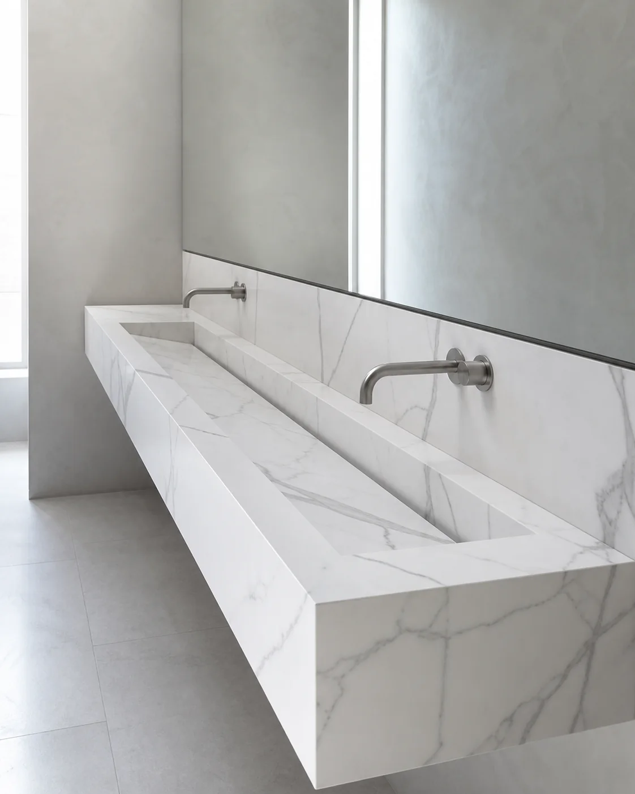
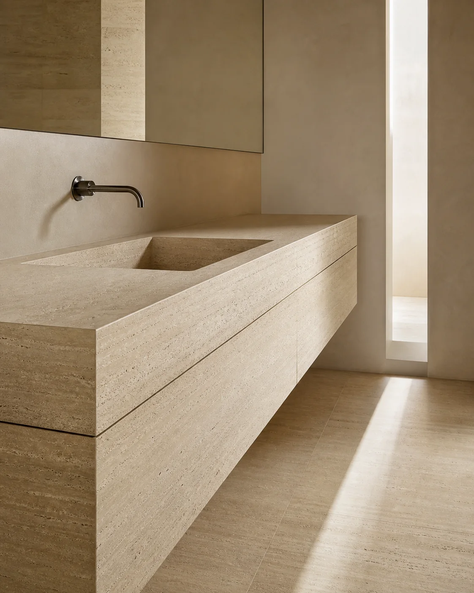

Bespoke Porcelain Sinks & Basins · London
Bespoke porcelain sinks & basins, made to measure in London.
Trough basins, vanity units and integrated porcelain bathroom surfaces, fabricated around the room, the taps and the way the basin needs to work.
- 01Basin formSingle, trough or double
- 02Tap positionWall or deck mounted
- 03Fall & wastePlanned before cutting
- 04Fit & supportMeasured for the room
00What bespoke means
Made for one room
What is a bespoke porcelain sink or basin?
A bespoke porcelain sink or bathroom basin is fabricated from large-format porcelain to fit a specific room, basin position, tap layout and waste arrangement. Unlike a standard ready-made washbasin, the dimensions, basin form, mitred edges, splashback and adjoining surfaces can all be made to measure.
Before the slab is cut, we resolve the support, storage, drainage clearances and adjoining tile lines so the finished basin installs as one considered part of the room.
How porcelain is fabricated
01What we make
Sink forms
The form follows the room.
Choose the function first. The length, basin layout, storage and adjoining surfaces are then made around the available space.
-

01Completed workWall-to-wall trough sinks & basins
A long shared basin with a clean floating form, linear waste and minimal visual interruption.
View project -

02Completed workPorcelain basin & vanity storage
The mitred basin and warm oak vanity read as one fitted composition.
View project -

03Completed workIntegrated surfaces
The basin, mitred face and feature wall are coordinated through one porcelain pattern.
View project -

04Completed workDouble basins
Two basin positions planned across one continuous porcelain vanity and storage composition.
View project
02The detail
Anatomy of a porcelain sink
The quiet finish is decided before fabrication.
Explore the four connected decisions that shape how a made-to-measure basin looks, drains and fits the room.

- 01
Proportion
Width, depth and basin position are set against the room, clearances and daily use.
- 02
Mitred edge
Cut faces fold around the form so the porcelain reads as one controlled volume.
- 03
Water path
Falls, waste position and tap reach are coordinated before any porcelain is cut.
- 04
Room integration
Support, tap deck, splashback and adjoining tile lines are resolved as one installation.
03Process
From brief to installed basin
The simplicity is built in stages.
Photos and rough dimensions are enough to start. The final geometry is agreed before fabrication and checked again before installation.
-

01 / ResolveSet the geometry
We coordinate dimensions, basin position, taps, waste, support and edge thickness before cutting.
-
 02 / Fabricate
02 / FabricateCut, mitre and check
The porcelain is assembled around the agreed form, with the falls and visible junctions checked in the workshop.
-

03 / InstallFit it to the room
The finished sink is supported, aligned and connected to the surrounding surfaces on site.
Start with
Room photos
Rough width & depth
Tap preference
Project postcode
Made to measure
Made-to-measure bathroom basins
Every made-to-measure bathroom basin begins with the room: its exact width and depth, the available support, the waste position and the way the surface should meet walls or storage. Artiling Studio fabricates bespoke porcelain basins for compact cloakrooms, floating installations and wall-to-wall spans, as well as double basins and integrated vanity tops that read as one continuous porcelain form.
Custom or irregular dimensions are resolved before cutting, with the basin geometry, falls, edges and installation access considered together. Compact cloakroom basins, floating basins and wall-to-wall trough basins can be planned around wall-mounted or deck-mounted taps, while the chosen slab informs pattern placement and visible junctions. The result is a made-to-measure basin designed around the project rather than selected from a standard size.
Request a quote for your basin04Selected work
Completed commissions
Real sinks, resolved in context.
Completed Artiling work showing how basin form, storage, taps and surrounding porcelain come together in the room.
Calacatta Gold double sink
Two basin positions resolved across one continuous surface.
View the completed project05Material directions
Studio previews
Picture the form in another surface.
These visual material studies explore proportion, basin form and porcelain character. They are not photographs of completed Artiling installations.
Explore the tile library


06FAQ
Frequently asked questions
Practical questions, answered clearly.
Start with the essentials. Further technical and installation questions are available below.
How much does a bespoke porcelain sink cost in London?
The cost depends on the size, porcelain slab, edge detail, vanity layout and installation requirements. Send us the approximate measurements and a few photos, and we can guide you with a clear quotation.
Can you make a porcelain sink to any size?
Most designs can be made to measure, depending on the space, slab size, drainage position and installation access. We confirm these details before fabrication.
Are mitred porcelain sinks durable?
Yes, when fabricated and installed correctly. Porcelain is dense, water-resistant and suitable for bathroom use, while mitred edges create a clean architectural finish.
Do you also make porcelain vanity tops and splashbacks?
Yes. We can create porcelain vanity tops, splashbacks, shelves and matching bathroom surfaces alongside the sink.
Can you help source the porcelain slab?
Yes. We can help narrow down suitable porcelain options and finishes, or review a slab you already have in mind before the design is confirmed.
What drainage options are available?
Waste details can include discreet standard outlets or linear drain arrangements, depending on the basin design, falls and chosen porcelain.
Can the sink accommodate wall-mounted or deck-mounted taps?
Yes. The sink can be planned around wall-mounted or deck-mounted taps, with positions and clearances agreed before fabrication.
Do you provide delivery and installation?
Yes. Delivery and installation can be included in the agreed project scope, with access and site conditions checked in advance.
How long does fabrication usually take?
Timing varies with the design, porcelain availability, templating and current workload. We confirm the programme once the design and site details are agreed.
Do you visit to measure or create a template?
Where required, yes. A site measure or template may be needed for wall-to-wall sinks, irregular walls, or polygonal and other custom shapes.
What wall support or preparation is required?
The support must suit the sink's weight, fixing method and wall construction. We review the substrate, support and adjoining finishes before fabrication or installation.
Which areas of London do you cover?
We work across London and Greater London. Send the project postcode with your enquiry and we will confirm coverage and access arrangements.
What is the difference between a bespoke sink and a bespoke basin?
For bathroom projects, bespoke sink, bespoke basin and washbasin are often used interchangeably. Basin or washbasin is more commonly used in the UK; Artiling designs the complete porcelain form around the room, taps, waste, support and adjoining surfaces.
Can you make a bathroom basin to exact dimensions?
Yes. Most bathroom basins can be fabricated to a project-specific width, depth and overall geometry, subject to available slab dimensions, drainage, structural support and installation access.
Do you make small bespoke basins for cloakrooms?
Yes. Compact made-to-measure porcelain basins can be designed for cloakrooms and small bathrooms, including wall-hung forms and basins integrated into a vanity.

Start a commission
Bring us the room. We’ll resolve the sink.
Send room photos, rough width and depth, your preferred tap position and the project postcode. Final drawings are not required at enquiry stage.